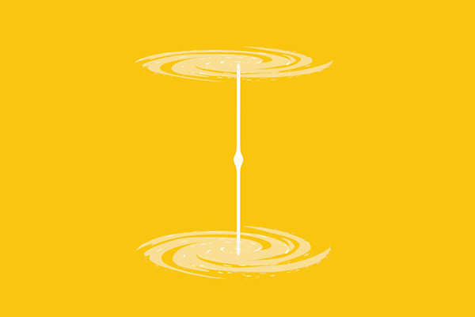
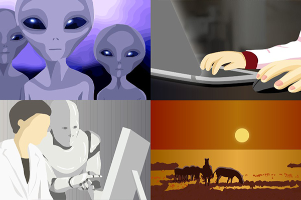

我們能利用五維的重力來達到時空的扭曲，而這樣的五維的現象人類推測可能出現在重力無現大的黑洞裡。
當五維黑洞的奇點時空扭曲剛好連到另一個時空扭曲的黑洞奇點，這時兩個黑洞變會像一個通道有所連接，而這就是我們所說的蟲洞。

兩個黑洞把宇宙的時空給扭曲對折了，就像一張紙的平面有兩個點A與B，我們將紙對折後，點A與B的距離縮短產生的一條捷徑，就是兩個黑洞所形成的捷徑。
而出口的黑洞我們又俗稱他叫白洞，但是目前人類其實並沒有真正發現蟲洞的存在，蟲洞只是天文學家們推論出來的可能性。
在黑洞以及蟲洞裡，因為無限大重力的存在，所以在那裡時空是被扭曲的而蟲洞是一個捷徑，連接兩個空間或時間的捷徑，所以如果蟲洞真的存在，人類就能回到過去。
但當這個理論被提出，就開啟了很多倫理的議題的爭議。像是有人如果回去殺了自己的祖父，那自己還會存在嗎？

因為歷史是不會被改變的，所以科學家就推測應該是產生了另一種歷史進程，這個歷史進程就是我們常聽到的平行時空或是平行宇宙理論。
可能同時存在著多個宇宙，多種不同的世界，而這就是五維的世界，因為在五維時空的人可以任意回到過去。